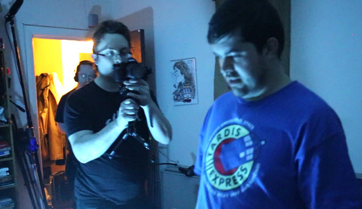
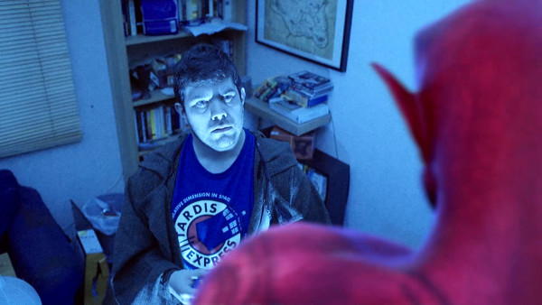
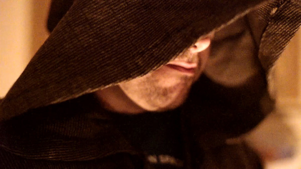
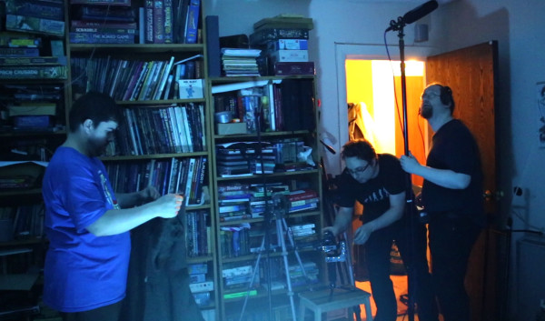
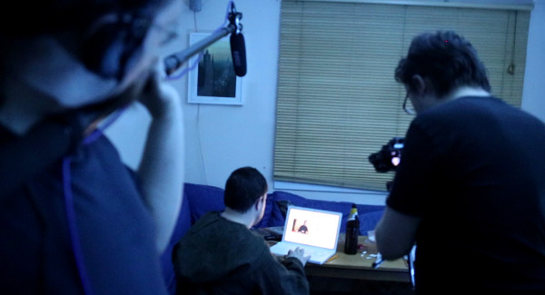

Lessons I Learned From My First Live-Action Short (After Nearly 20 Years Of Animation)
So, last week I released my first-ever live action narrative film project. And this week I’m going to try something a bit different in my blogging (for me, anyway): a write up of the lessons I learned during the course of the film’s production.

Some context: I’ve been producing animation for nearly 20 years at this point. My work’s been featured on CNN, discussed in the New York Times and reviewed by Roger Ebert (which was very cool). But I’ve avoided live-action up until now as too clunky, preferring to focus on innovative approaches to animation like ‘Machinima’ techniques.
That was until this year, when a combination of advice from film sales expert Stacey Parks and my increasing awareness of advances in film technology – see my blog post from a couple of weeks ago – pushed me into acquiring kit and going all-out for live action this year.
So far this year I’ve actually shot 3 live action shorts, plus some non-narrative ‘pretty stuff’ (which I’ll talk about in another post if folks are interested). But HOWTO: Demon Summoning was the first live action narrative feature that I’ve finished, and it was also the first one I shot – back in February, in fact.
And it’s had a very, very good reception. Stunningly good, actually.
174 upvotes on YouTube for a pretty staggering 97.7% positive feedback there.
Positive feedback from reddit, from Facebook, from Twitter and from blogs.
It’s gone far better than I expected.
It was also a pretty fantastic learning experience. So, here are some of the things that I, ‘The Machinima Guy’, learned as I took my first tiptoe steps into the scary world of Real Life Film…
I’m going to focus on the filming aspect here. Marketing and release are a different beast, and I might write a post about them in future.
People Are Way More Forgiving Of Live Action Than Animation

Working in animation, you’re held to an extremely high standard by virtually all viewers; even non-technical, non-industry viewers.
Lipsynch doesn’t look perfect? Your film’s shit. There’s a jitter for five frames in one shot? Your film’s shit. One background character looks a bit pixelated? Yeah, you guessed it.
I’ve spent a long time – about the last 5 years before this year – trying to push the quality of my animation up to the point where it’s acceptable to the general viewing public, and I’ve never quite hit that point.
Maybe that’s because the only animation that most people see is produced by Pixar or Dreamworks, and they set a pretty high bar. Or maybe it’s the dreaded ‘Uncanny Valley’, and the better my work has gotten the deeper into the Valley it’s sunk. Certainly it’s true that the audience was more critical of Death Knight Love Story than they were of BloodSpell, despite the fact that the latter looked a lot more primitive.
So I was pretty nervous releasing my first live action film – a film which, I knew, wasn’t shot anywhere close to Hollywood standards.
But the response was really surprising. People didn’t pick up on or get distracted by the production values. Even when the exposure was a bit ropey, there was noise in the shot, or in one case our actor was visibly wearing an earphone for his lines, no one minded. ALL the comments I’ve had about the cinematography and lighting have been positive, despite the fact that I was a massive n00b at the time of production and, if I’m being 100% honest, some of HOWTO’s shots make me wince now.
In fact, the only negative comments I’ve had – aside from a couple of ‘didn’t get on with the story’ comments and one or two ‘editing could have been tighter’ mentions – were about the CGI character. Several viewers mentioned that small things about his appearance took them out of the film. The Uncanny Valley strikes again…
As a post-script: another possible reason why viewers were more forgiving is that my previous films have been heavily drama-based, and HOWTO is very much a comedy-horror. However, that’s not the case with all my upcoming shorts, so we’ll see how they go down!
You can now shoot a film lit by four candles.

One of the big reasons I avoided live action for so long was because of the lighting. I knew it was a nightmare. I knew because I’d been told by friends with film experience, I knew because I’d read about how to do live action lighting in books, and I knew because it had been a PITA on my lo-fi cooking show Kamikaze Cookery.
So when I read about and subsequently saw the power of the Sony A7S camera to shoot using very low light (in film terms, that is), I was pretty excited. And with HOWTO, I decided to push it as far as it would go and shot the first half of the film lit by four tealights only.
Result? The tealights kicked ass. Indeed, the only problem we had with those shots was when I panicked and added an additional light, the light from which subsequently bounced off the wall and meant that Johnnie, my lead actor, was the least-lit thing in shot. Derp.
Had I just trusted the Power Of The Tealight (and modern low-light cameras), everything would have been fine.
The rest of the film was shot using a couple of small, battery-powered LED lights, not even on stands – one was sat on the floor, one was clamped to a bookcase. Again, they provided more than enough light. In fact, my primary challenge was avoiding them over-lighting the background. (I failed in that somewhat, and have now invested in a roll of ‘blackwrap’ – the pro solution for cutting out light – for future productions.)
Physical shooting is exhausting.

I’m a reasonably fit guy. I’m not a Crossfit champion or anything, but I’ve been reasonably athletic most of my life, trained in various martial arts, I’ve just started weight-training with kettlebells, and so on.
All of which is a preamble to saying: shooting day kicked the crap out of me.
We didn’t work insane hours. That’s something I’m being very careful to avoid: whilst I know the conventional film industry regularly works 14-20 hour days, I’d prefer to avoid copying their insanity. (Millions of dollars have been sunk into a number of studies proving that working like that is a Really Really Bad Idea. I don’t know why people keep doing it.)
We weren’t hefting around massive weights. I saved that for Dangerous Treasures, the ‘Lessons Learned’ for which will involve the phrase ‘200 kg of plasterboard’. But still, I was exhausted for days after the two evenings of shooting; far more so than I expected to be.
I think that the extreme tiredness I’ve experienced after shoots is significantly a factor of the ultra-lightweight ‘run and gun’ approach I’m aiming for on my live action films. Rather than bring in an entire crew – which has its benefits, but slows production down (once again, this is a Peopleware issue) – I’m working with as small a crew as possible.
On HOWTO, there were two of us – Ian, on sound, and I – plus Paul Hamilton, who played Qulkazeth, helping out when he wasn’t in shot. It works very well as a fast-moving set, but it does mean that I’m keeping a hell of a lot of things in my head at any one time.
In addition, whilst the work isn’t too physically onerous – nothing compared to an hour of Muay Thai, for example – it’s continuous. As director/producer/DoP/caterer/1st AD/everything else, I basically didn’t stop moving for 5-8 hours. That took considerably more of a toll the next day – and the next week – than I expected.
Which isn’t to say it wasn’t awesome.
It was awesome

And here’s the final point. The shoot was tremendously good fun.
So far my experience has been that pre-production is stressful. Post-production is slow. But production is brilliant.
I’ve actually had much the same experience before on animation. When we were making BloodSpell, the ‘animation’ was entirely produced by 3 or 4 of us in a room, puppeteering characters in a video game environment. It was very precise work, and we had to be extremely in tune to get the shots right. And it was tremendous fun; several of my closest friends these days are people I met on the BloodSpell shoot.
Likewise, I’ve always loved directing actors in voice acting and motion capture. And physical filmmaking is like a combination of those two things. It’s extremely collaborative. It’s constantly challenging, which is indeed a euphemism for ‘things are always going wrong’, but I love that sort of environment. It brings a bunch of very smart people together to make something cool, and pushes all of us to solve problems together.
If you haven’t tried it, I recommend doing so. It’s awesome.
Addenda: more points needing less write-up
People are super-used to video noise these days. Non-experts will be more forgiving of it than you’d expect. I was worried about the noise on some of my shots, but I’ve had exactly zero comments on it, even when I specifically asked about video noise.
Your crew aren’t on the same diet as you. I’m on Paleo, and as such I had completely forgotten that milk and sugar exist. My (British) crew reminded me of this in no uncertain terms.
We lost SOOOO much time to me losing lens caps. Much as I love my lightweight shooting, roles have evolved inside the film industry for a reason, and I rapidly figured out why the ‘camera assistant’ position exists. Now I’m very, very careful where I put my lens caps, and I still haven’t had a shoot where I haven’t temporarily lost a lens cap yet.
Lines are harder to learn if they’re in another language. We spent about 3 hours on Johnnie’s magical chanting as he attempted to jam my authentic R’lyehian chant into his head. In the end, we cheated – I recorded myself reciting the chant, and Johnnie listened to it via an earbud while shooting that scene.
The traditional description of film lighting is ‘painting with light’. I’m now of the opinion that’s wrong: it should be painting with shadow. Shadows were definitely the thing I screwed up most in the HOWTO lighting. There were way too many bright white walls.
Pre-production is huge. I could do an entire post about this. Suffice it to say that my rule for short film shoot prep is now to assume it’ll take at least 3 days longer than I expect – even after I’ve taken this rule into account.
I saw a lot of film makers complaining about camera gimbals (robotised support mechanisms, like a twenty-first-century Steadicam) that required tools. I didn’t really understand why it was such an issue. Now I do. On a shoot, time used for anything is super-important, and setting up my gimbal, a Nebula 4000, took 15 minutes we didn’t have. I now own a toolless gimbal. :)
And that’s it! Any comments, thoughts, or questions? Any ways I could have done things better? Let me know on Twitter, Facebook or just email me!